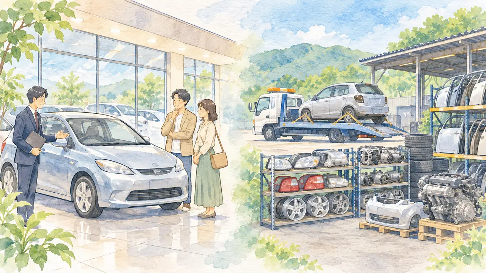
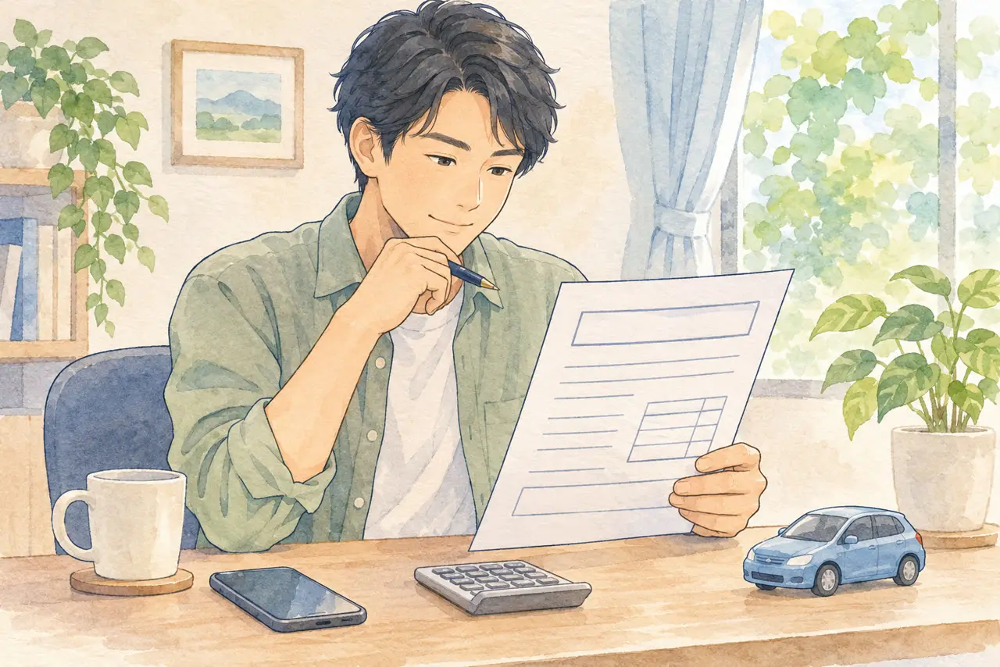
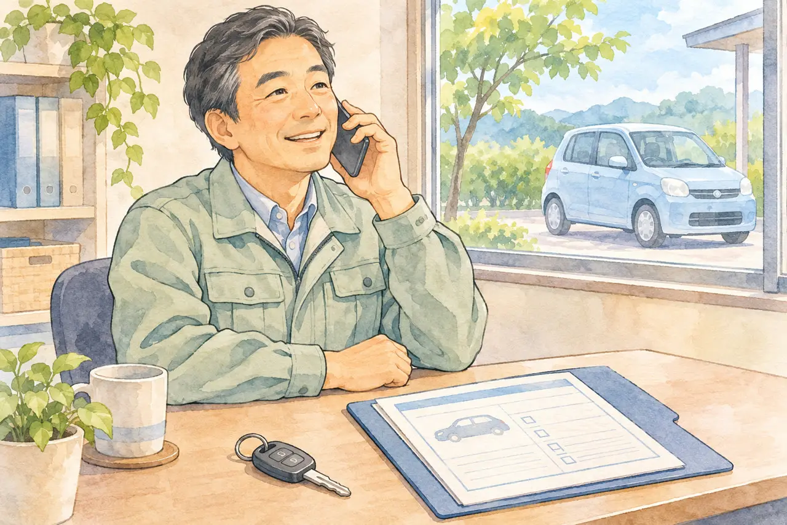

車を手放す前に、依頼先で迷っている方へ
ディーラーで0円と言われた車でも、値段がつくことがあります
買取・下取り・廃車買取の違いと、見積もりで損しない3つの質問
公開
こんにちは、東京都足立区江北で自動車解体・廃車買取をしている「大崎商店 環七店」です。
「ディーラーで『0円です』と言われた。この車、もう値段はつかないの？」
そんなとき、あきらめるのは少し早いかもしれません。
この記事の要点（30秒で読めます）
- 0円と言われた車も、別のタイプの会社なら値段がつくことがあります。
- 理由は、会社によって車の見方が違うからです。
- 見積もりで損しないために、3つの質問をするだけで十分です。
① なぜ、同じ車でも見積もりが違うの？

会社によって、車を何に使うかが違うからです。
| 会社のタイプ | 車を、何として見るか |
|---|---|
| 車を売る会社（ディーラー、中古車販売店） | 「中古車として売れるか」だけを見る |
| 解体もする会社 | 売れる車は中古車として見る。売れない車は、使える部品や鉄の価値も見る |
たとえば、ディーラーでは売れそうにない古い車でも、解体もする会社なら、部品や鉄に値段をつけられます。0円と言われた理由は、車が悪いからとは限りません。
解体を、ほかの会社に任せているところもあります。どこで解体するのかは、聞いておくと安心です。
② 「下取り」「買取」「廃車買取」は、何が違う？
| 呼び方 | 一言でいうと |
|---|---|
| 下取り | 次の車を買うお店に、今の車を引き取ってもらう |
| 買取 | 車を買うかどうかと関係なく、売る |
| 廃車買取 | 古い車や動かない車など、売りにくい車を引き取ってもらう |
名前が「廃車買取」でも、お金がかかるかどうかは会社によります。名前ではなく、見積もりの中身で比べましょう。
買い替えのときの選び方は、車を買い替えるとき、古い車はいつ・どう手放す？をご覧ください。
③ 見積もりで損しない、3つの質問

見積もりをもらったら、次の3つを聞いてください。
- 「最終的に、手元にいくら入りますか？（いくら払いますか？）」
- 買い替えの場合は、新しい車の値引きや諸費用も合わせて、全部でいくらかを見ます。
- 「引き取りや手続きに、お金はかかりますか？」
- 車に値段がつかなくても、運ぶ費用や手続きの費用がかかる会社があります。廃車の費用はいくら？
- 「契約したあとで、金額が変わることはありますか？」
- 変わる条件があるなら、契約の前に書面でもらいましょう。
その場で急いで決めなくて大丈夫です。見積もりを持ち帰って、比べてから決めてください。 契約したあとの減額やキャンセルの相談は、実際に多く寄せられています。
もっと知りたい方向けのリンクです。
- 税金やローンの扱い：廃車にするとお金は戻ってくる？／ローンが残っている車は廃車できる？
- 古い車・走行距離が多い車の値段：20年以上前の古い車・10万km超えの車でも値段はつく？
大崎商店の場合

大崎商店は、車の販売も解体も、自社で行っています。
- 売れる車は、環七店で中古車として販売します。
- 売れない車は、入谷店で解体します。使える部品や鉄に、値段がつくこともあります。
- 年式や走行距離だけで、断ることはありません。古い車も、動かない車も、状態をお知らせください。
車そのものの処分代はいただいていません。 足立区外など、引き取りに費用がかかる場合は、事前にご案内します。
他社で「処分代がかかる」「0円」と言われた車も、お気軽にご相談ください。
ご自分の車の場合が気になったら、お気軽にご相談ください。車の状態と置き場所を伺い、ご案内します。
電話で相談する03-3854-4141よくある質問
Q. ディーラーの下取りが0円でした。廃車買取に出せますか？
A. ご相談いただけます。使える部品や鉄に価値があれば、値段がつくことがあります。
Q. 買取と廃車買取は、どちらがお得ですか？
A. 車の状態によります。両方の見積もりを取り、手元に入る金額で比べてください。
Q. ローンが残っていても、手放せますか？
A. 手放せる場合があります。車検証の「所有者」がローン会社のときは、まず契約先に確認します。大崎商店でも、お電話で伺っています。
車を手放すときは、大崎商店にご相談ください
車の状態、置いてある場所、車検証の情報をお知らせください。
- 解体費用・手続き代行費用・印紙代は、別請求しません
- 足立区内は、引き取り無料
- 足立区外で買取価格がつかない車は、環七店から車で片道約30分圏内は引き取り無料
- 買取価格がつく車は、圏外でも、所在地と車の状態によっては無料で引き取り（事前にご案内します）
- 車種や状態によっては、引き取り当日その場で現金買取も可能
- 車のお持ち込みは、どこからでも歓迎（基本は環七店。日時は事前にお電話でご相談ください）
ご来店の前に、お電話ください。引き取りなどで外出していることもあり、お電話いただければ、受け入れの可否や、ご案内できる日時をお伝えできます。
大崎商店 環七店
電話：03-3854-4141
〒123-0872
東京都足立区江北7丁目1−3
営業時間：月〜土 10:00〜18:00
休業日：日曜・祝日
環七沿い／舎人ライナー
西新井大師西駅
大崎商店 入谷店
電話：03-3899-2837
〒121-0836
東京都足立区入谷7丁目5−11
営業時間：月〜土 9:30〜17:30
休業日：日曜・祝日・第2土曜
引き取りやご相談のお電話は、環七店がスムーズです。お電話の際は、「車を手放す相談で」とお伝えください。車検証をお手元にご用意いただくと、ご案内がスムーズです。
くわしい条件と出典（読みたい方向け）
- 解体の許可：使用済みの車を解体する会社には、自動車リサイクル法に基づく解体業の許可が必要です。東京都環境局・自動車リサイクル法
- リサイクル料金：中古車として売る場合は、預けてあるリサイクル料金相当額を、車の代金に加えて受け取る扱いです。解体する場合は、リサイクルに使われます。見積もりの内訳で扱いを確認してください。環境省・自動車リサイクル法のよくある質問
- 税金の戻りと保険の戻り：解体する車は、自動車重量税の還付や自賠責保険の返戻金が見込める場合があります。条件は、重量税が適正な解体と車検の残り期間、自賠責が解約手続きと保険の残り期間などです。大崎商店では、対象になる場合、見込額を買取価格に含める方法と、お客様ご自身で受け取る方法をご案内します。国税庁・自動車重量税の廃車還付制度／国土交通省・自賠責保険の解約
- 大崎商店の手続き：再販売する車は一時抹消（軽自動車は一時使用中止）を行います。解体した車は、普通車は永久抹消登録、軽自動車は解体返納を行います。すでに一時抹消・一時使用中止を済ませた車は、解体後に解体届出を行います。運輸支局・永久抹消登録と解体届出／軽自動車検査協会・解体返納／軽自動車検査協会・解体届出
- 預託済みリサイクル料金：再販売する車や当店で引き続き使う車では、預託済みのリサイクル料金相当額（資金管理料金を除く）を買取価格に上乗せします。
- 水没車：車内に泥が残っている場合は、泥の処分料がかかることがあります。水没・冠水した車の廃車
- 契約トラブル：国民生活センター・中古自動車の売却トラブル
※掲載のイラストはAIで作成したイメージです。実際の店舗・車両・相談風景を撮影したものではありません。